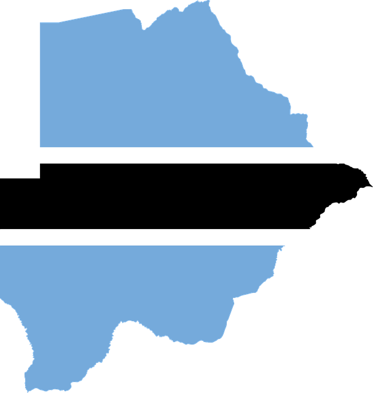
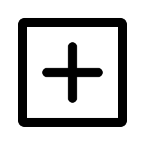

연혁
메뉴1-1
메뉴1-2
메뉴1-3
카드 갤러리
메뉴1-1
메뉴1-2
메뉴1-3
메뉴3
메뉴1-1
메뉴1-2
메뉴1-3
메뉴4
메뉴1-1
메뉴1-2
메뉴1-3
보츠와나
아프리카 남부에 있는 보츠와나에 대한 사이트 입니다.
오늘의 뉴스

세계에서 3번째로 큰 다이아몬드 원석이 보츠와나서 발견됐다.
2021-06-17
보츠와나 부통령 "악당국가 북한과 외교관계 단절했다"
2016-09-24
보츠와나에서 코끼리 수백 마리 집단 폐사… 원인 불분명
2020-07-04
“우리는 노예가 아니다” 보츠와나, 영국 기업과 다이아몬드 원석 지분 25%→30% 재계약
2014-07-02
보츠와나의 자연명소
Okavango River
호수/산책 코스
Makgadikgadi Salt Pan
자연/야생동물 서식지
Moremi Wildlife Reserve
자연/야생동물 서식지
Khama Rhino Sanctuary
자연/야생동물 서식지
보츠와나 한인회 소식
보츠와나 한인회, 설날 잔치 열고 정기총회도 함께
2019-02-08
김채수 전 보츠와나 한인회장 선행에 감동
2019-02-08
보츠와나한인회, 한글 글짓기대회 열어
2020-12-15
아프리카중동한상연합회장에 김채수 전 보츠와나 한인회장
2022-07-07
바이러스 소식
“델타보다 전염력↑”…남아공·보츠와나 ‘새 변이’ 발견
2021-11-26
오미크론 기원은 어디?…보츠와나 "타국 외교관서 옮아"
2021-11-30
오미크론 첫 검출국 보츠와나 "입원환자 증가 없어"
2021-12-09
스파이크 돌연변이만 32개…보츠와나·남아공 새 변이 '우려'
2021-11-26